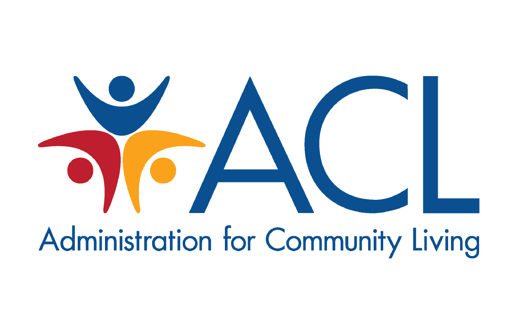
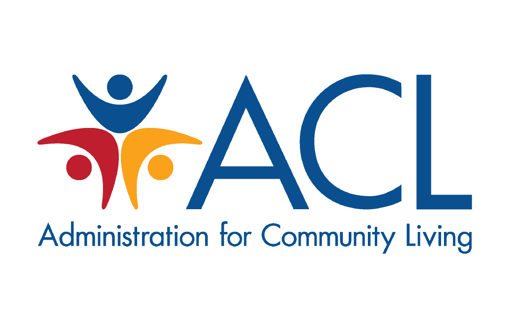

Biomechatronics and Intelligent Robotics Lab


We are a team of students working on affordable soft exosuits from the Department of Mechanical Engineering at the City University of New York, City
College, the Lab of Biomechatronics and
Intelligent Robotics (BIRO). Exoskeletons can help 200M people with lower limb impairments to improve health. But current exoskeletons are rigid and expensive. We have developed low-cost soft exosuits that are made of fabrics actuators. The robot uses fabric sensors to monitor gaits and controls the robot.

We gratefully acknowledge the supports from:
 

January 2020
December 2019
Our paper on soft robotics for foot drop rehabilitaiton was accepted for DMD 2020.
October 2016
I am honored to join the Technical Committee on Mechanisms and Design of the IEEE Robotics and Automation Society (RAS) as a Junior Chair.
Septemeber 2016
I was promoted to Associate Editor of the Journal: Frontiers in Robotics and AI
June 2016
Our paper on soft exosuit control was accepted by International Symposium on Wearable Robotics.
March 2016
I was invited to be an Associate Editor for the International Conference of the IEEE Engineering in Medicine and Biology Society (EMBC).